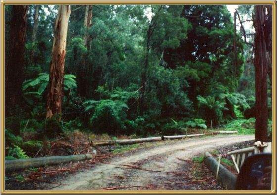

This is not actually Buchan, but it is fairly close, and Buchan is the nearest town. It's a back road, and is fairly typical of the scenery through the mountains around the area. There are some spectacular caves at Buchan as well.
Photographer: Jean Stokes